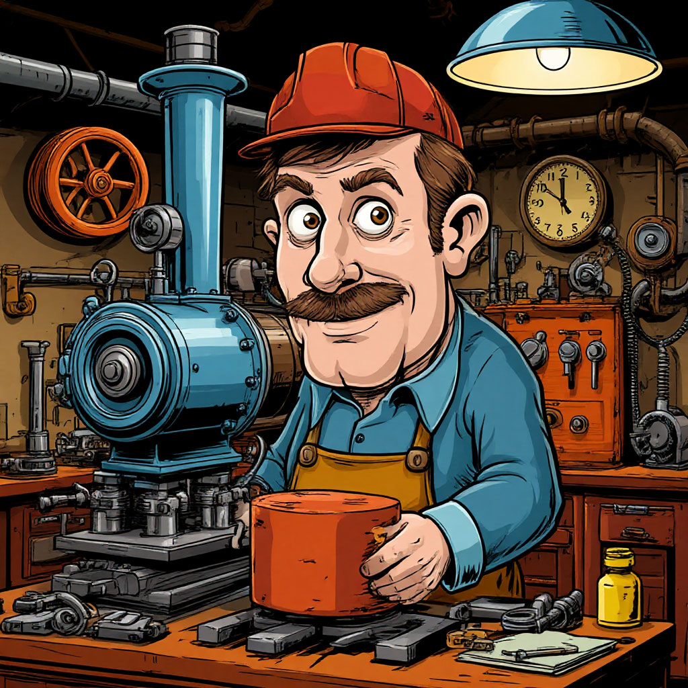

Обо мне
Я - супер-машинист. Умею водить электровоз! 🚇

О себе и своей работе
Я работаю машинистом электровоза уже много лет, и за это время стал настоящим профессионалом своего дела. Каждый день я выхожу на работу с улыбкой, ведь люблю свою профессию всем сердцем. Мой опыт и зрелый возраст помогают мне принимать верные решения даже в самых сложных ситуациях.
Мои профессиональные навыки
В своей работе я опираюсь на:
- Отличное знание технической документации
- Глубокое понимание работы электроподвижного состава
- Способность быстро анализировать ситуацию
- Умение сохранять спокойствие под давлением
Что я умею как специалист
Я постоянно совершенствую свои навыки:
- Владею современными методами управления электровозом
- Эффективно использую все системы безопасности
- Провожу первичный осмотр состава
- Знаю, как действовать в экстренных ситуациях
Мой характер и подход к работе
В работе я всегда:
- Отвечаю за каждое своё действие
- Организован и пунктуален
- Умею работать в команде
- Делюсь опытом с молодыми коллегами
Мой внешний вид
Я считаю, что внешний вид — важная часть профессионализма:
- Ношу форменную тёмно-синюю куртку с золотыми пуговицами
- Всегда надеваю форменную шапку с кокардой
- Слежу за временем по своим часам
- Держу при себе свисток — неотъемлемый атрибут профессии
Работая машинистом, я каждый день доказываю, что профессионализм, ответственность и любовь к своему делу — это то, что делает мою работу по-настоящему значимой и важной. Я горжусь тем, что могу быть примером для молодых специалистов и вносить свой вклад в безопасность железнодорожного движения.